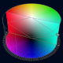
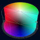
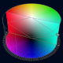

rrColor.js
Just a modern experimental WEB color picker.
Pickers examples:
Rectangle
Circle
Circle HSV
Cube*
Cylinder* 
Sliders
Compact sliders
Palette
All in a Tab container
Multy-sync pickers
* Uncommon in web applications
 Circle
Circle  Circle HSV
Circle HSV  Cube*
Cylinder* 
Sliders
Cube*
Cylinder* 
Sliders  Compact sliders
Compact sliders  Palette
Palette  All in a Tab container
Multy-sync pickers
All in a Tab container
Multy-sync pickers